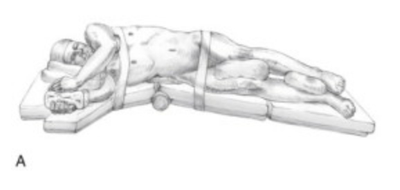

Adrenalectomy
Indications
Fall into five categories:
1. Functional tumour causing a clinical syndrome due to
hormone excess.
2. Adrenocortical cancer
3. Adrenal mets
4. Adrenal incidentaloma.
5. Phaeo
Lap approach is now standard of care
- decreased morbidity
- reduced length of stay
- reduced post-op analgesia requirement.
Special Preparation
See
individual conditions.
Prophylaxis with cephazolin.
Anatomy
On Left: adrenal vein is inferomedial to the gland and drains into
the L renal vein
On Right: adrenal vein is superomedial and drains into the IVC
posterolaterally
Procedure
Most common access is transabdominally via flank
- full lateral decubitus; table flexed in the midpoint (about level
of costal cartilages) to open up the flank.
- beanbag under the R flank, protective roll under R axilla, L arm
extended
-> gravity moves colon, and SB away.

Left
1. Access 2cm below and parallel to costal margin
- 10mm trochar, under 11th rib at midaxillary line, parallel to
costal margin
2. Identify and divide the blood vessel first.
- avoids inadvertent distal pancreatectomy due to misidentification
when gland fatty.
3. Mobilize splenic flexure medially
- opens retroperitoneal space and exposes splenorenal ligament
4. Mobilise the entire splenorenal ligament to the left curs to
expose the adrenal gland.
- spleen falls medially, exposing the avascular plane between Gerota
fascia and pancreas
- incise peritoneum along inferior border of pancreas, upward to
crus, and mobilize the pancreatic tail superiorly
5. Ensure what you are looking at is the adrenal by following the
vein down into the renal vein.
- visualization aided by retracting pancreas and spleen to right.
- encircle, divide with clips.
- then divide accessory veins, left middle arterial pedicle (us.
from aorta) with harmonic.
- posterior diaphragm visible behind gland; take superior arterial
pedicle off left inferior phrenic and inferior arterial pedicle from
left renal artery with harmonic.
6. Place in a bag and retrieve.
Right
1. Retract the liver to life right hepatic lobe and reflect
medially.
- divide right lateral hepatic attachments and right traingular
ligament with hook or harmonic to permit medial retraction.
--> key maneuver for adequately exposing the R adrenal vein and
entry to IVC
2. Dissect at the lateral vena cava above duodenum, until R adrenal
vein reached.
- more superomedially than on L, and often short and broad.
- gentle dissection above and below can lengthen it, allowing safer
clip placement; do not apply tension and tear it.
3. Gland retracted inferiorly and laterally using peanut to show
medal arterial pedicle; others also taken as above.
Post-op Care
Essentially as for lap chole.
Remove IDC
Typically go home D2-3
- in special cases may require hormone support and follow-up lab
data.
Alternatives and Controversies
Large tumours
May be difficult to get the vein first. Then divide
arteries and retract gland medially to get the main vein.